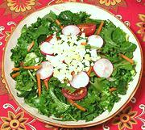

|
Mixed Greens SaladSpain - Catalunya - Ensalada a la mallorquina | ||||
| Makes: Effort: Sched: DoAhead: |
4 salad ** 40 min Most |
An excellent light salad of fresh greens which can be made in any desired quantity. The greens can be prepared a couple hours in advance. Bag them and keep the tomatoes, garnishes and dressing separate. See Buffet Service. | |||
|
|
3-1/2 2 3-1/2 3-1/4 4 1 6 ------ 1 4 3 1-1/2 1/2 2/3 1/3 1/4 ------ 1 3 |
oz oz oz oz oz med oz ---- cl T T t t t t ---- |
Escarole Watercress Chicory Endive Carrot Scallion Cherry Tomatoes -- Dressing Garlic Anchovy fillet (1) Olive Oil ExtV Wine Vinegar Dijon Mustard Salt Pepper Sugar (2) -- Garnish Egg, hard boiled Radishes |
If you are unfamiliar with some of these greens see our Lettuce & Chicory page, except for Watercress which is a Mustard. Prep - (40 min)
|